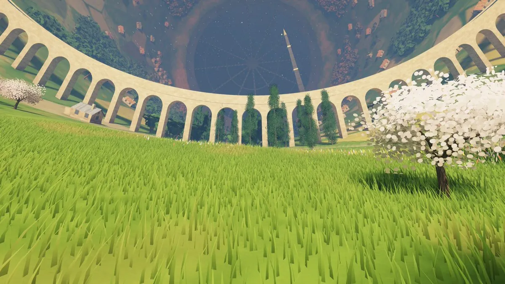

镜头贴着草地。近处是带白花的树，远处一道环形石拱水道绕着鼓壁向上弯去；水道中央立着一根细长的日晷针，针尖对着轴心那边的夜窗。这是 Nathan Wilbanks（@NathanWilbanks_）在 2026-11-17 0:01（新加坡时间，UTC+8）发出的一段约 77 秒、1920×1080 演示视频的封面静帧。作品名叫 Duskward，可以在浏览器里飞：太阳在圆柱的一头，夜在另一头，地面向墙上卷过去，飞得离太阳越远，天色就越晚。按本站规则，下面以这件作品为中心。作者本人的原帖与回复全文中译；作品本身未见开放许可，所以只做独立导读，引用都很短。不转载源码、视频或音频。

这是一件什么作品
Duskward 是一件可以在浏览器里打开的交互世界。作品页标题是「Duskward - An Interactive World」，标明由 nathan 制作。加载画面上的短句是：「A garden inside a turning drum. The sun is at one end and the night is at the other.」（一座转动的鼓里的花园。太阳在一头，夜在另一头。）进入菜单后还有一句说明：从正午飞到黄昏；地面向墙上卷过去，再越过你的头顶；离太阳越远，天色就越晚。试玩地址是 agnt.gg/creation?id=DmDSpPYm，页面写着「有链接即可打开，不必注册」。
作者在原帖里说，这里完全没有用到图片、3D 模型或程序库，整个可交互的奥尼尔圆柱世界装在一个 1064 KB 的 HTML 文件里，并用 AGNT，配合 Claude Fable 5.2 与 Opus 5.5 做成。模型与工具链都是作者自报 ⚠️。公开文件里的页脚写得更具体一些：「The world, its light and its music are made by code. Nature sounds made with ElevenLabs. WebGPU · one HTML file · made with AGNT.」（世界、光线和音乐由代码生成。自然音效用 ElevenLabs 制作。WebGPU · 一个 HTML 文件 · 用 AGNT 做成。）它明确要求 WebGPU，并提示在桌面版 Chrome 或 Edge 中打开。
我们对公开的 embed/assets 文档做了只读核对，没有进入世界里飞一遍。去掉平台注入的存储垫片之后，这份 HTML 为 1,108,427 字节（约 1,082 KiB，或按十进制约 1,108 KB），与作者自报的 1064 KB 不完全一致 ⚠️。文件里没有找到 three.js、Babylon 等常见三维库的标识，也没有 .glb / .gltf 模型引用，渲染走的是 WebGPU。但文件并非「完全没有图片」：加载层用一张 1280×720 的 WebP 海报做背景，看起来就是这个世界自己的俯视截帧；另外还内嵌了 League Spartan 与 Fira Code 两种字体，以及名为 meadow、wind、stream、dusk、bird-a、bird-b、frog、owl 的自然音效样本。页脚已写这些自然音效来自 ElevenLabs。也就是说，「没有外部三维库、没有模型文件、场景由代码生成」可以和公开文件对上；「完全没有用到图片」如果按字面理解，并不成立 ⚠️。本页不提取、不转载这些内嵌素材。
可以在里面做什么
菜单把操作写得很清楚。鼠标或拖拽用来环视；W A S D 飞行；E / Q 沿轴向升起或落到地面；G 在地面行走与飞行之间切换；Shift 加速；1 到 6 是固定视点，T 是引导游览；P 打开光线、颜色和声音等设置；M、H、Esc 分别管声音、统计和这张菜单。触控是按住飞行、滑动转向，两指加速。画质可在 Low / Medium / High 之间切换。
六个视点各自有一句短说明，这里按出现顺序短引：正午，果园在太阳底下；环形水道绕着鼓壁走一圈；日晷针的影子总是指向黄昏那边；离太阳越远，天色越晚；黄昏，夜窗下的灯已经亮了；一整天，收进同一眼。设置里还有几种现成的外观预设，名称是 Duskward、Long golden hour、Crystal air、Morning mist、Starlight、Storybook、Silver screen，也可以自己改，再复制链接。
有人问物理是否也模拟了科里奥利效应。作者回：其实有，但完全是无意的；飞到地图中心附近还会被吸住，出不来。这是作者自述 ⚠️。另有人问能否在保留署名的前提下，把作品改成一款太空游戏；作者说可以，做完后告诉他，他会帮忙转发。这是写给提问者的口头许可，不能当成对所有人有效的开放许可证 ⚠️。
原帖全文
以下为作者英文原帖的中文译文。原帖不是长文，附件是视频。作者随后立刻补上了试玩链接、灵感图和其它截图。
这里完全没有用到图片、3D 模型或程序库
只是一个可交互的奥尼尔圆柱三维世界，全部装在一个 1064 KB 的 HTML 文件里
用 @agnt_gg，配合 Fable 5.2 和 Opus 5.5 做成
完整源码在下面 👇
作者：Nathan Wilbanks（@NathanWilbanks_）；发布：2026-11-17 00:01（新加坡时间，UTC+8）。原帖附视频，点击观看。
英文原文
no imgs, 3D models, or libraries were used here at all
just an interactive o'neill cylinder 3D world in one single 1064 KB HTML file
built using @agnt_gg with fable 5.2 & opus 5.5
full source below 👇
作者在同一线程里的回复
试玩链接（2026-11-17 00:01，新加坡时间）：
自己来试试 👇
try it yourself here 👇
https://agnt.gg/creation?id=DmDSpPYm
紧接着两条是「my inspo:」和「some other cool shots」。前者附的是一张奥尼尔圆柱内侧田园与镜面采光带的概念画，很像 1970 年代 NASA 空间殖民地设想图；具体画作作者与许可本次未在图上核出，本页不转载 ⚠️。后者是作者自己的场景截图拼贴：环形水道、日晷针、农舍、鹳鸟，以及夜窗一侧能看见的气态巨行星。这些是作者发布的作品截图，本页也不另托管。
有人问做了多久。作者在 2026-11-17 01:16（新加坡时间）回复：
智能体时间 12 小时 38 分
这已经包括全部构思、游戏开发、迭代，以及视频渲染等等
总共 3.98 亿 token
12h38m agent time
that included all ideation and game dev and iterations and video rendering and all that
398M tokens in total
这些数字为作者自报，未见会话记录或账单，本库未复核 ⚠️。
对 @jasonkneen 能否在署名后改成太空游戏的问题（2026-11-17 01:53，新加坡时间）：
当然可以，去做吧!! 做完后告诉我，我会帮忙转发 🔥
hell yea, do it!! ping me when you do and I'll share it 🔥
对 @LearnOpenGLES 关于科里奥利效应的问题（2026-11-17 08:00，新加坡时间）：
其实有，但完全是无意的
飞到地图中心附近时，你真的会把自己「卡住」，它会把你吸进去 😆
yes actually, but all unintentionally
you can actually get yourself "stuck" when flying near the center of the map, it sucks you in 😆
同一线程里还有多条只致谢的回复，这里不逐条全录。
许可
作品页提供「查看源码」和「下载 .html」，但未声明开放许可。按 AGNT Community Core License 2.0 与 AGNT 条款，用户产出的权利归作者本人；作品页脚保留 “made with AGNT” 署名。内嵌字体与 ElevenLabs 音效各有自己的许可。
传播数据（快照）
截至 2026-11-17 约 13:41（新加坡时间，UTC+8），原帖约 6,904 次浏览、201 个赞、14 次转发、15 条回复、133 次收藏，引用为 2；附件视频播放次数约 3,488。作者账号当时约 9,564 名关注者。这些数字会变，只作当时记录，不是效果评测。
注记与署名
- 这是以 Duskward 为中心的导读，并收录作者本人原帖与实质性回复的全文中译。作品公开发布、可查看源码，但未声明开放许可。
- ⚠️ 「用 AGNT，配合 Fable 5.2 与 Opus 5.5」「智能体时间 12 小时 38 分 / 3.98 亿 token」、科里奥利效应「完全是无意的」，均为作者自报。
- ⚠️ 作者自报文件为 1064 KB；公开 assets 文档去掉平台垫片后为 1,108,427 字节，两者不完全一致。
- ⚠️ 「完全没有用到图片、3D 模型或程序库」需对照公开文件来读：未见外部三维库和模型文件，但含有海报图、字体和 ElevenLabs 自然音效。
- ⚠️ 对单人「署名后改成游戏」的口头同意，不能当成公开的开放许可。
- ⚠️ 灵感配图的具体作者不详。作品页 schema 里的发布时刻 2026-11-16 15:07:23 未标明时区。
- ⚠️ 展示、赞、转发和关注者数量是核对当日的快照，会变。